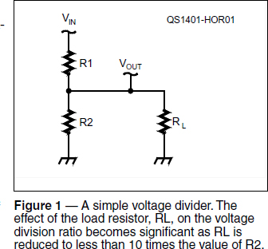
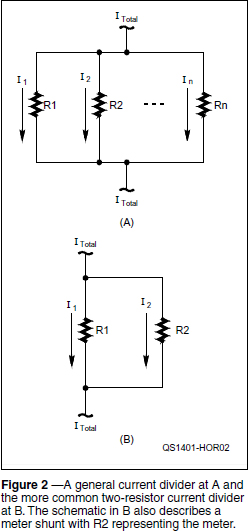
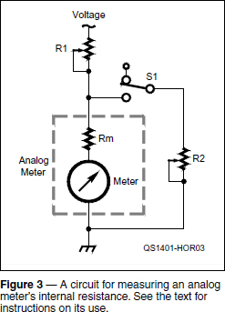

Experiment #132 — Resistor Networks
Resistors may seem to be the lowliest of components, but they are by far the most common. This month’s column discusses several different types of useful resistor circuits that are handy designs to have in your toolbox. Dig in and try a few on your own.
Finding a Needed Parallel Value
We should all know the basic formulas for series and parallel resistors. In series, just add the values together: RSER = R1 + R2 + R3…etc. For parallel resistors, the equivalent value is the “reciprocal of the sum of reciprocals”: RPAR = 1 / (1/R1 + 1/R2 + 1/R3 + …etc). Happily, for two resistors this simplifies to RPAR = R1 R2 / (R1 + R2). But what if you need to create a certain resulting value of RPAR — what two resistances in parallel can you use? Start by picking a value for R1 that is higher than the desired value. Once a little algebra is applied to rearrange the equation, the needed resistor’s value is
R2 = RPAR R1 / (R1 – RPAR) [1]
This is a handy formula to have in a calculator or spreadsheet so I’ve created an Excel spreadsheet containing all the formulas in this column. It’s available on the “Hands-On Radio” web page.1
Power Dissipation
Power dissipation for a single resistor is equal to V2/R or I2R, but what happens when you have more than one resistor in series or parallel? It sounds complicated, until you realize that in a series circuit the same current flows through all of the resistors — use I2R. Similarly, the same voltage appears across all of the resistors in a parallel circuit — use V2/R.
Voltage Dividers
If you are given both resistor values in the voltage divider shown in Figure 1 and for a moment ignore the load resistor, RL, it is straightforward to figure the output voltage: VOUT = VIN R2 / (R1 + R2). But what if you need a specific division ratio (VOUT / VIN) and want to know what resistor values to use? Start by choosing the total resistance of the divider, RTOT = R1 + R2, then

R2 = RTOT (VOUT / VIN) and R1 = RTOT (1 – VOUT / VIN) [2]
Or maybe you know the division ratio and already have a value for R2 — note that the division ratio is inverted in this equation:
R1 = R2 (VIN / VOUT – 1) [3]
The voltage division ratio is also affected by the load, RL, attached across R2 at the output of the divider. If you need a precise ratio, remember to include the effect of RL by substituting RL // R2 for R2 in equations 2 and 3. (The symbol // means “in parallel with.”)
A good rule is that to avoid large effects on the voltage division ratio, RL should be at least 10 times greater than R2. If this is not practical, an alternative is to connect the voltage divider output to a high-impedance buffer circuit such as an emitter-follower (“Hands-On Radio” Experiment #2) or op-amp voltage follower (Experiment #3).
Current Dividers
Sometimes, instead of dividing a voltage, you need to divide a current, such as when a load current is too large to measure directly. For resistors in parallel as in Figure 2A, the current through any one of them, RN, is

IN = ITOT (RPAR / RN) [4]
where ITOT = total current through all resistors and RPAR is the combined parallel resistance of all the resistors.
Let’s do a sample calculation for two resistors. If you have 1.5 mA flowing through the parallel combination of a 1 kΩ and a 470 Ω resistor, how much current is flowing through the 470 Ω resistor? And through the 1 kΩ resistor?
I470 = 1.5 mA (1 kΩ // 470 Ω / 470 Ω) = 1.5 mA (320 Ω / 470 Ω) = 1.0 mA
I1k = 1.5 mA (1 kΩ // 470 Ω / 1 kΩ) = 1.5 mA (320 Ω / 1 kΩ) = 0.5 mA
This makes sense — the lower-value resistor carries more current. It’s always good to check on your calculations!
Here’s a more common situation: diverting a specific fraction of the circuit’s total current, ITOT, through a measurement circuit as in Figure 2B. With two resistors in parallel and R2 the resistor in the measurement path, the current division ratio is I2 / ITOT = I2 / (I1 + I2). To limit the effects of adding resistance to the circuit, you must also pick a suitably small value for the total amount of resistance you are adding, RPAR = R1 // R2. By rearranging equation 4, we can find R2 = RPAR / (I2 / ITOT) and rearranging equation 1 gives us the value of R1 = RPAR R2 / (R2 – RPAR).
An example would be nice! Let’s say I want to divert 1% of a 750 mA current through the measurement branch of my circuit. (The division ratio for 1% is 0.01.) If I can add 1 Ω of total resistance to the circuit, I have RPAR = 1. Start by finding the measurement branch resistance, R2 = 1 / (0.01) = 100 Ω. The main current-carrying resistance must be R1 = 1 × 100 / (100 – 1) = 100 / 99 = 1.01 Ω. One more thing — make sure R1 can dissipate the total power of 0.752 × 1.01 = 0.57 W. And also remember that resistors change value when they heat up, so it might be smart to use a 5 W or larger resistor for R1 to keep its temperature rise to a minimum.
Meter Shunts
Another very common application of current dividers is the meter shunt. When you see a meter calibrated in amps of current, the delicate meter movement itself is not carrying all that current. Usually the meter is a milli- or microammeter that measures a small sample of current diverted through it as we just described. Analog meters with a full-scale current (IFS) of 100 µA to 10 mA are fairly common. Here’s how to use them for measuring larger currents.
If you don’t know the meter’s IFS, connect a 1.5 V battery or other low voltage source, a 10 kΩ potentiometer, and DMM (in current-measuring mode) in series with the meter. Adjust the resistance for full-scale current (start at maximum resistance) and read IFS from the DMM.
Next determine the meter’s internal resistance, RM, but don’t hook it up to an ohmmeter! The current from the ohmmeter could damage a sensitive meter movement, so use the circuit in Figure 3. Meters with IFS of less than 1 mA typically have an RM of 1000-5000 Ω and for IFS of 1 to 10 mA, RM ranges from a few to several hundred ohms. Open S1 and adjust R1 for full-scale deflection. Now close S1 and adjust R2 for half-scale deflection. Remove the voltage source, disconnect R2 and measure it — it has the same value as RM.

Now that you know the meter’s full-scale current and internal resistance, you can calculate the value of shunt resistance necessary for a current, I, through the shunt to cause a full-scale reading on the meter:
RSHUNT = RM IFS / (I – IFS) [5]
Let’s give this a try: find the shunt resistance that causes a 1 mA full-scale meter with a resistance of 150 Ω to indicate at full-scale with a current of 1 A through the shunt.
RSHUNT = 150 Ω × 0.001 A / (1 – 0.001) = 0.150 Ω
Remember that the shunt may have to dissipate some power and that it shouldn’t get very warm to avoid temperature effects. A common choice for shunt resistors is a coil of small enameled wire. Tables of resistance for copper wire of different sizes are available in The ARRL Handbook and other sources.2 For example, AWG 20 wire can carry 1 A of current and has a resistance of 10.12 Ω per 1000 feet. We’ll need 1000 × 0.150 / 10.12 = 14.82 feet of wire to make our shunt.
These circuits are simple but they are everywhere, once you start looking for them. Troubleshooting and circuit design become easier if you understand how they work.
1All previous Hands-On Radio experiments are available to ARRL members at www.arrl.org/hands-on-radio.
2The ARRL Handbook is available from your ARRL dealer, or from the ARRL Store, ARRL order no. 0007. Telephone toll-free in the US 888-277-5289, or 860-594-0355; fax 860-594-0303; www.arrl.org/shop/; pubsales@arrl.org.